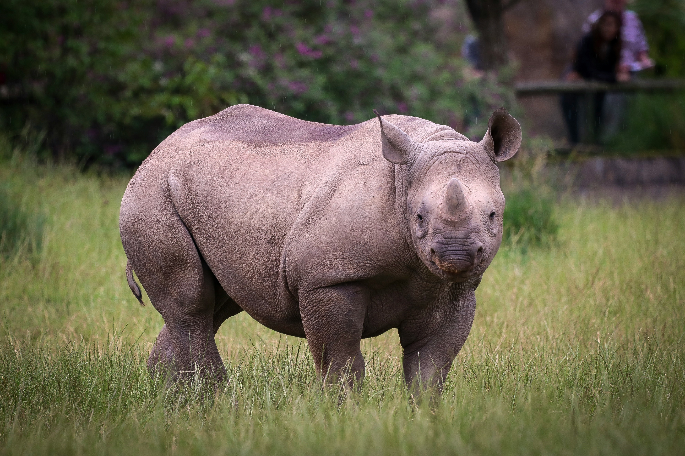

La rápida desaparición de especies desde la presencia del humano
Desde hace muchos años el ser humano ha sido participe en muchas de las cadenas naturales los cuales permiten a un ecosistema o el planeta existir sin embargo este al tener una gran disposición para manipularlas ha hecho un mal uso de estas causando el aceleramiento de extinción de diversas especies en el cual hablaremos de las especies las cuales el ser humano ha afectado directa o indirectamente al grado de llegar a causar su extinción.
 Photo, R. H. (2019, 2 agosto). Rinoceronte en hierba verde. Unsplash.
https://unsplash.com/es/fotos/rinoceronte-en-hierba-verde-djWg7Bf8Uqw
El profesor de la MIT (Max Tegmark) plantea un escenario desolador el cual con el inmenso aumento de la población humana en el futuro se deje muy poca zona para los ecosistemas, entre ellos las plantas y
sus animales que residen en estos, mientras los humanos siguen con su avance reduciendo este espacio por consecuencia disminuyendo y extinguiendo muchas de estas, así quedándose solos poco a poco, causando
la sexta extinción masiva después de la devastadora extinción masiva de los dinosaurios como lo afirma en un articulo del periódico y blog EL PAIS.
Hubo un trabajo elaborado por la UNAM, liderado por Gerardo Ceballos, en el cual se examinaron 34,600 especies de 5,400 géneros de vertebrados que han habitado desde hace 500 años,
utilizando la base de datos creada por la IUCN. Descubrieron que, durante todo este tiempo, 73 géneros se extinguieron a un ritmo 35 veces más rápido. Si se realizan los cálculos, se habrían
necesitado 18,000 años sin ningún contacto directo o indirecto humano para que este número de especies se extinguieran, lo cual representa una cantidad de años muy grande en comparación con lo que
realmente sucedió.